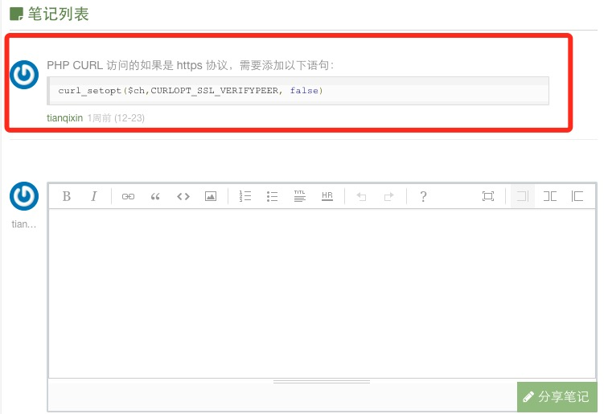

做程序员这几年来，接触了不少要学习编程的小伙伴，经常提到的问题是XXX 语言怎么入门、如何学好编程语言等问题。这里我总结了初学者的一些困惑与大家分享。

1、如何入门？
在学习编程第一天，大部分人会想我该如何去学习，需要看什么书？
对于刚入门的程序员，不管是科班出身还是非科班出生，我建议你可以先买一本 《XXX 从入门到精通》 类型的书（找好评多的），最好还能搭配视频，视频与书结合着看， 从软件环境安装到执行出第一个 "Hello World！"。 。
可能有些小伙伴也在一些论坛听一些老鸟告诉你需要买个《XXX 编程思想》，这种书很好，是 XXX 语言的圣经，但个人认为这并不适合初学者，这种书简直初学者的噩梦，很容易浇灭你的学习热情。
当然 《XXX 从入门到精通》 这种书也只适合入门，入门后就可以烧了，要想精通还是建议认真研习下 《XXX 编程思想》。
书上的案例建议自己一个个字母敲下来自己去测试执行，开始虽然慢，但这是你必须要经历的过程，千万别 ctrl+c、ctrl+v。
2、碰到问题如何解决？
学习编程语言会碰到各种各样奇怪的问题，初学者最有可能碰到的是语法格式的错误，例如：
- 结束语句分号忘记写了、漏了反括号、缺少空格，等等。
- 关键字，变量名写错了，例如 $runoob 写成了 $runob，String 写成 Strng。
- 判断相等两个等号(==)写成一个(=)，有的还不能使用两个等号(==)判断是否相等。
- 赋值类型不匹配，整数类型使用了字符串赋值。
- 格式缩进不一致（python）。
- ……
以上这类错误在初学者非常常见，如果是语法错误，一般 IDE 都会有很好的提示功能，你根据提示修改即可，但大家平时还是要细心些，培养好的编程习惯。
而有些错误在执行后才会提示，一堆英文提示，单个字母都认识，拼起来一个都不认识，这时候很多人就手足无措了，不该怎么办，其实这时候大家不要慌，要淡定，这些都是纸老虎，只要你认真去看，英文看不懂借助翻译工具 Google 、百度翻译下，是很容易理解错误内容的。
比如以下这个例子:
……failed to open stream: No such file or directory in ……
如果你看的懂其实意思很明白了，文件没找到，如果你看不懂，丢到 Google 翻译后为:
......未能打开流：没有这样的文件或目录......
这会明白了吧，然后你看看代码中包含的哪个文件不对，修改为正确的文件名或文件路径就能解决了。
如果中文还看不懂，我就懵逼了……
总结下就是编码要认真细心，注意格式，不要丢三落四，使用好的 IDE 协助培养良好编程习惯，遇到错误认真看，看不懂用翻译工具翻译再看。
3、我该去哪找人提问交流？
如果我们已经认真看了错误提示，还不懂的如何解决问题时，这是建议你使用以下几种途径解决：
- 搜索引擎(百度、Google、Bing等)上检索你的问题与需求，看看是否有人碰到与你一样的问题。
- 技术论坛上提问如: 百度知道、CSDN、V2EX 等。不过个人不推荐这个这个要等人来回答，效率太低，而且不一定是你想要的。
- QQ 群，找到你学习语言的活跃 QQ 群，群内提问，如果有人回答最好，没人的话建议看下群内成员的活跃度，直接发信息给几个活跃的，如果他们不是他忙应该会帮你解决。
- 最好的也是最直接的就是问你身边的技术高手，他一句话也许就能给你点透。
平时我们也要多收藏好的技术文章，如：CSDN、博客园、菜鸟教程、简书、infoq、51cto、知乎等。多看看前辈的经验和案例，自己也去测试测试。这些对大家的积累是很有帮助的。

4、英文重要吗？
学习编程需要英文很好吗？不需要。
英文能力重不重要？非常重要。
虽然现在很多中文的技术文档、博客、论坛也很多，不懂英文也是能学会一门编程语言。但是你要明白很多编程语言的官方文档，源码注释都是英文的，很多前沿的技术也是英文的。 不去阅读英文的文档很多精髓无法领会，翻译的有些也是不准确的。
此外，还有最重要一点是很多错误提示也是英文的，你英文能力好，可以直接明白提示内容，如果不懂你还得拿翻译工具翻译。
很多问题的解决方案你百度的结果可能是：呵呵……，但你如果能使用英文描述下来，再把这描述内容往Google(需要梯子)框框一丢，第一个搜索结果 80% 是你需要的答案。
所以非常建议大家学好编程语言里常用的一些英文术语，如果你英文差就借助错翻译工具去阅读，久而久之，你会体会到他的好处的。
例如： debug => 调试 ， debugger => 调试器 ， abstract => 抽象的 abstract base class => (ABC)抽象基类 ， abstract class => 抽象类 ， import => 导入 ， include => 包含 ， array =>数组 ， command line => 命令行 ， comment => 注释 ， commit => 提交 ， compatible => 兼容 ， compiler => 编译器 ， component => 组件 ， array => 数组 ，thread => 多线程 ，multi-thread => 多线程 ， 等等

更多可查看：编程中常见英文术语。
5、总结与分享
总结我想对大家是最难的，就像上学的时候让你们一天写一篇日记，基本没几个人能坚持下来。
但学习编程过程中，我还是建议大伙平时要多总结自己走过的坑，记录自己的学习过程，不要求一天一篇，但最好在 3~5 天有个对自己过去的学习有个总结与反思，特别是可以记录规范性文档及程序脚本，比如：
- XXX 语言编码规范
- XXX 语言逻辑判断方式
- php 获取当前 URL
- 正则表达式匹配邮箱、电话号码
- 树状结构的递归代码
- 中文乱码解决方案
- 数据库连接代码封装
- ……
我相信这些功能大家在编程中绝对不会只写一次、两次，会非常频繁的使用，所以这些东西大家可以总结出来，写在自己的云笔记上（有道云、印象笔记）。
最后是分享，如果你有好的问题解决方案，或者你认为你的方法是天下第一，可以分享出来，包括各个博客平台。
这里推荐大家在学习过程把自己的学习笔记分享到菜鸟教程上，菜鸟教程已开通笔记功能（需要注册），首次分享需要发送笔记到管理员邮箱(429240967@qq.com)。
通过审核会给你邀请码注册，以后就能在我们平台上自己记录笔记了。笔记的内容要求简单明了，不能偏离对应的文章的内容，使用 一句简单的描述+一段简单的代码 的方式。如下图所示：
